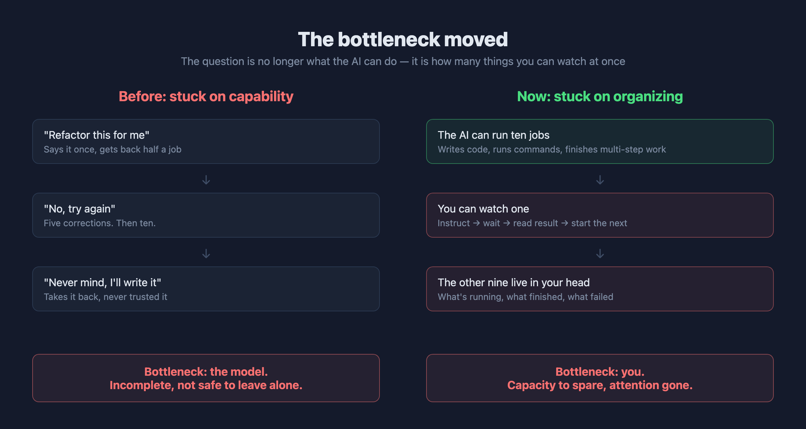
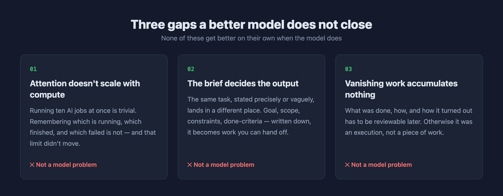
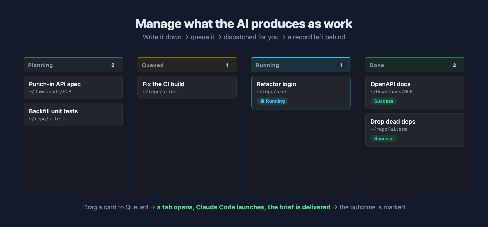
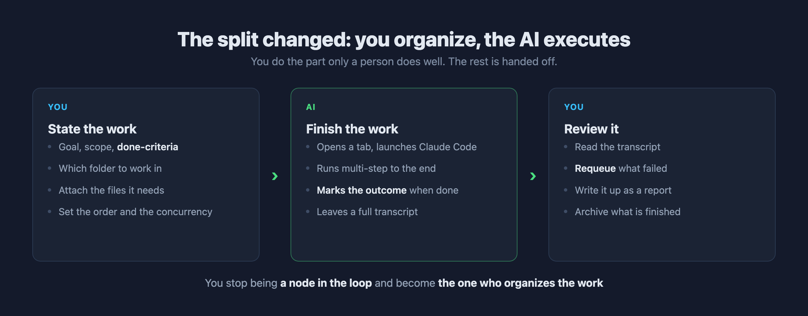

My Tools Got Faster. I Didn't.
The AI could run ten jobs at once. I finished two that evening. The problem was never the model — the work was never organized.
Last Wednesday evening I wrote down six things I wanted cleared before bed: draft an API spec, backfill a few unit tests, fix a Windows build error, drop some unused dependencies, refactor a login flow, update a README.
Claude Code could do every one of them. Not "probably manage" — actually finish them: read the files, run the commands, read the error, fix it, run again.
I got through two.
The AI never got stuck. I did — because I can only watch one thing at a time. Paste the brief, see it start, wait, check the result, start the next one. And the waiting in between wasn't reusable, because I knew that the moment I walked away I'd lose track of where it was, whether it errored, and what I meant to do next.
My tools got faster. I didn't.
The bottleneck moved
It is worth noticing that the way we complain about AI has completely changed in two years.
It used to be "it only does half the job," "I corrected it five times and it's still wrong," "forget it, I'll write it myself." That was a capability problem, and the answer was obviously to wait for a better model.
The models did get better. And the complaints turned into "I don't know if that finished," "I forgot to rerun the one that failed yesterday," "what did I actually ship this week?"
That is not a capability problem any more.

Here is the difference that matters: the first kind of problem improves when you swap the model. The second kind does not.
A model ten times better will not remember which job is running. If anything it makes things worse — it runs faster and can take on more, while the number of things you can personally track is exactly what it was two years ago.
Three gaps a better model does not close
I pulled apart what actually stopped me that evening. It was three things, and not one of them was about the model.

One: attention doesn't scale with compute. Running ten AI jobs at once is technically trivial — open ten tabs. What's hard is remembering which is running, which finished, and which failed and needs another go. Human working memory holds something like four or five things at once, and that number does not move because you bought a better GPU.
Two: the brief decides the output. The same task, phrased as "tidy up the punch-in API" versus "read the three packet captures under ~/Downloads/HCP, produce OpenAPI specs for the login and punch-in endpoints as LoginAndGet.yaml and PounchCard.yaml, with request and response examples," lands in two completely different places.
The first costs you five rounds of correction. The second lands first time. And writing the second requires you to actually write it down — which nobody can do for you, but which is also precisely what turns a task into something you can hand off.
Three: work that vanishes accumulates nothing. The two things I did finish that night were a vague impression by the next morning. What was done, how, and how it turned out lived in a terminal tab I had already closed. Come the weekly update, I was reconstructing it from memory.
That isn't work. That's an execution.
This is an old problem
The interesting part is that our industry solved these three problems a long time ago.
We invented kanban boards, ticket systems and standups — not because engineers can't write code, but because when several executors work at once, someone has to organize it. Who does what, in what order, whether it's done, and where the output went. None of those questions have anything to do with how good any individual executor is.
So it's strange that the moment AI became an executor, all of that machinery disappeared.
We treat AI as a smarter autocomplete: open a chat, ask, take the answer, close the tab. No queue, no status, no record. It's like hiring an extremely capable colleague and then refusing to give them a ticket system — everything by verbal handoff and a verbal report afterwards.
That works when you have one colleague. It stops working when the colleague can do ten things at once.
Manage what the AI produces as work
Once that lands, the move is obvious: what the AI executes should be managed the same way what a person executes is managed.
Write it down, queue it, dispatch it, keep the record.

I built this into the terminal I use every day. Four columns: Planning, Queued, Running, Done. One job is one card — a title, which folder to work in, detailed instructions, attachments if it needs them.
Drag a card to Queued and you're done thinking about it: a tab opens, Claude Code launches, the brief is delivered, and when it finishes the card moves to Done marked success or failure. How many run at once is yours to set; nothing gets fired off all at once.
Those six things from Wednesday? Today I'd spend fifteen minutes writing six cards, queue them, and go do something else.
The split changed
The real shift isn't "saves time." It's that your role in the process changed.

You used to be a node in the loop: instruct → wait → confirm → instruct again. The speed of the whole pipeline was capped by how fast you replied.
Now you do the part only a person does well — state the work clearly, decide the order, review the result. The execution in the middle is handed off.
Which is also how each of those three gaps finds a home:
- Attention → the card remembers the status for you. What's running, what finished, what failed — one glance, not one more thing held in your head.
- The brief → because it has to go on a card, you end up thinking through the goal and the done-criteria. (And if you can't be bothered, you can have the AI expand your rough note into a proper brief first — though whether to accept it is still your call.)
- Accumulation → every finished job keeps its full transcript. Want to know what happened last week? Have the AI read the whole board and write it up as a report. Archive what's finished so the board only holds what's live.
In closing
I don't think "better models" is the wrong direction. Models should absolutely keep getting better.
But if you've had that feeling — the tools are this good, so why isn't anything moving faster — the problem may not be the model you picked. It may be that your work was never organized in the first place.
However good AI gets, the work still needs organizing. And for now, that is still your job.
AITerm is the cross-platform AI terminal I build. The task board, auto-dispatch, work reports and archive described above are all built in. Open source, Apache 2.0, runs on macOS, Windows and Linux.
🌐 Website: https://aiterm.win/ 💻 Source & downloads: https://github.com/jamesju9999/AITERM
If this was useful, a few claps go a long way (you can leave up to 50), and follow along — more field notes on AI-assisted development to come.